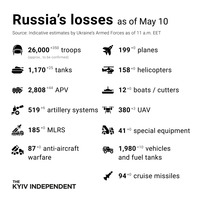

Think and answer a few questions
- Why people in Russia have lost:
- free, independent TV
- access to social media
- access to worldwide news services
- freedom of speech
- Why are the FSB and Notional Guard arresting people for peaceful protests against war?
- Why didn't anyone from opposition remain free?
- Why the quality of life in Ukraine so different from Russian?
The answer is simple: the Russian government, headed by V.V. Putin distorts the facts about the real military situation in Ukraine by blocking ALL foreign and opposition media on the territory of the Russian Federation. Robbery of the ordinary population of Russia, the military-political elite builds palaces for themselves and buys yachts, eating even the MILITARY industry, on which they often like to speculate. Democracy and freedom of speech are unheard of by the Russian people; and many Russian soldiers are surprised at the quality of life even in the small regional centers of Ukraine.
Myths from Russian propaganda
- Ukraine is under nazis power!
- Ukrainians are waiting for Russian peacekeepers and liberators
- It's not a war, but a special operation
- Russian Federation is not targeting the civilian population of Ukraine
- NATO threatens Russia
- Russian troops help Ukrainian civilians
- This is a war with NATO
- Russophobia as the main reason for sanctions from the West
- Russian soldiers heroically fight in Ukraine
- Photo / video from Ukraine - fake and distortion of facts
- Ukrainians repeatedly attacked their facilities in order to later blame Russia
There are no Nazis in Ukraine: even the president is Jewish there.
Thousands of Ukrainians are protesting in the occupied cities against the Russian armed forces that have invaded the territory of Ukraine.
This is the real WAR. See below and in the gallery.
Russian troops KILL civilians. Numerous cases of torture and rape by Russian soldiers have been documented by foreign independent agencies. Check below and the gallery.
NATO was founded to PROTECT Europe from Soviet influence, not to expand its borders. The only reason why NATO still exists is Russian aggression towards Moldova (here), Chechnya (here and here), Georgia (here), and since 2014 - towards Ukraine (here and here).
Russian troops loot in the occupied settlements, taking everything from household appliances to linen and clothes from the homes of escaped civilians. Also, the RF Armed Forces repeatedly fired at humanitarian convoys and green corridors intended for the evacuation of the civilian population and the delivery of food products to the occupied cities.
NATO does not participate in the war - the contingent of the alliance is not located on the territory of Ukraine and does not take part in hostilities.
The real reason for the sanctions is the open invasion of the Russian Federation into the territory of Ukraine and the war crimes committed by the RF Armed Forces against the civilian population of Ukraine.
No, they fight mediocrely, as evidenced by the plans of the military command of the Russian Federation changed on the go. However, soldiers "heroically" kill and rape girls in front of their mothers, kill husbands in front of their wives, and take out of the apartments ALL the property of Ukrainians who temporarily escaped from the war (including washing machines, microwaves and carpets), while leaving the bodies of the dead comrades on the battlefield.
All photo and video materials about the massacre in Bucha, as well as the killings of civilians in Chernihiv, Sumy and Mariupol, were recorded by many independent correspondents and eyewitnesses as well as satelitte images. All attempts to manipulate facts are refuted quite easily, as, for example, a photo of Ramzan Kadyrov from the supposedly "Kiev region" taken at a Rosneft gas station (which was not and is not in Ukraine).
One of the biggest misconceptions in this war. On the contrary, the Russian Federation often claims that it attacked a military facility, and then claims that the attack was carried out by the Ukrainian armed forces on its own infrastructure. There is no one in the modern civilized world who would be capable of such an attack on one's own family, friends and neighbors. There seems to be something wrong with the Russian authorities, if they really think so. Evidence is always contradicted by false provocations.
War crimes of the Russian Federation
- Russia uses weapons of mass destruction prohibited by Geneva Convention:
- cluster bombs
- pfosphorus bombs
- heavy flamethrower systems
- and land mines
- The Russian Federation is bombing
- hospitals and maternity homes
- schools and kindergartens
- churches
- civil infrastructure
- Russian soldiers deliberately destroy the civilian population of Ukraine - this is genocide
- more than 400 people from the civilian population in Bucha and other settlements of the Kiev region (as of 04/04/2022)
- many of them were tortured and shot in the back of the head with their hands tied behind their backs
- with signs of torture
- many raped (even 10-year-old girls)
- many corpses have tried to burn; some were run over by heavy machinery
- even pets are killed
Letter from Russian woman
On February 24, 2022, our country attacked a neighboring sovereign state and unleashed a fratricidal war with the closest nation to us - the Ukrainian people. Putin's propaganda lies openly to you about the goals and deliberately hides the facts of this terrible “spec. operations”.
The cities of Kharkov, Mariupol, and the suburbs of Kyiv are completely destroyed by bombing. Civilians, including children, are killed every day as our army deliberately strikes at high-rise buildings, schools, kindergartens, and other non-military facilities. According to the UN, four million Ukrainians are now refugees in neighboring countries. And of those who have remained in the country, ten million have left their homes and must live in shelters, and even these shelters are bombarded with rockets and bombs. This is the biggest migration crisis since the Great Patriotic War! It's hard to believe, but these are facts that you can find on any news site outside of Russia.
In Russia, there is no longer honest and objective information, the Kremlin and all the state. channels, including Channel One, lie to you, and sources independent of the Kremlin are blocked. If you know someone who has relatives, friends or just close people living in Ukraine or serving in the Russian army - talk to them, ask what they know. If you have relatives or friends in Ukraine or have conscripts, contract soldiers or professional military personnel of the Russian army in your family and you know first-hand information - please share it with your friends.
Today, without a VPN, it is simply impossible to access independent news in Russia. Therefore, you are the only source of truthful information. The Russians must know the truth, they must understand that power in the country has been seized by a gang of war criminals. Putin's strategy to seize Ukraine in three or four days completely failed because he was not ready for such resistance. All Ukraine stood up to defend their Fatherland. The Russian army, demoralized and mired in corruption, is completely unprepared to fight: our soldiers are cannon fodder. They are thrown like firewood into a furnace - without pity and regret.
Watch this interview with Valentina Melnikova, Secretary of the Union of Committees of Soldiers' Mothers of Russia: https://www.youtube.com/watch?v=vq7bAYFi-jE
^Back to top^
How to help
- Spread to info to your friends, family, everyone!
- Directly support the people of Ukraine
- Clone this website on GitHub, create your own copy to prevent censorship : https://github.com/omegawillend/the-truth
Links
- 1920.in : website with a tool to send true messages to the Russians
- supportukraine.org.ua
- Twitter Oryx : Full list of visualy confirmed losses for both sides of conflict
- Russia's war crimes : More photos and evidence of war crimes
- Interview with Crimea Tatar
Gallery
Russian's loses

Kharkow before and after "liberation"

Russian soldier with swastika tatoo


Load more...